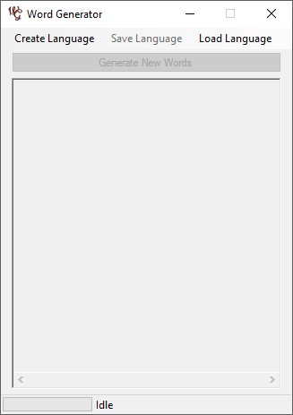
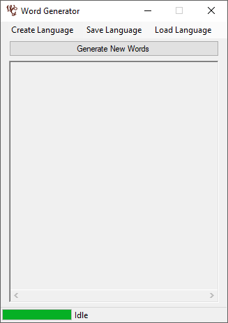
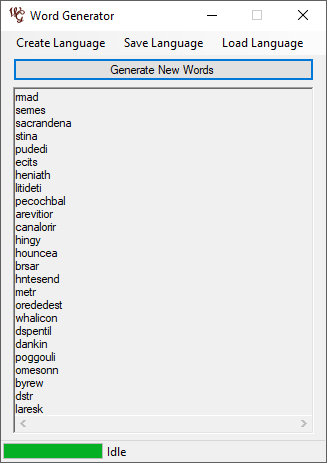

Changelog
Version 1.2 [Download]
- Added support for line-separated sample data instead of just space-separated data.
- Fixed bug where the program would crash due to escaped character (such as \r).
Version 1.1 [Download]
- Added check to prevent generation of words already contained in the sample file. This changed the format of the .wgd file, so the 1.1 .wgd files are incompatible with the 1.0 files and vice versa.
- Word length now follows an approximate normal distribution.
Version 1.0 [Download]
- Added processing of Sample Data. This picks up very basic patterns in the samples such as the starting letters, ending letters, average word length, and word length variance.
- Added support for saving (and loading) of processed data as a .wgd so that sample data doesn't have to be re-processed after closing and reopening the program.
- Added generation of 25 random words based on the sample data.
How to Use
When the program is opened, there will only be 2 options available: Create Language and Load Language.
To create a new language, press the Create Language button and select a plaintext file containing a list of at least 50 sample words. These words can be separated by line or by spaces (or a combination of the two). Depending on the size of the sample data, the program might take some time to process everything. The status bar on the bottom will indicate when the processing has finished. As an example, we will use a list of 10,000 english words (which can be found here - link will open in a new tab). After the processing has finished, the program will have enabled the other two buttons: Save Language and Generate New Words.
The Save Lanuage button will save the processed information to a .wgd file so that it can be loaded if the program is closed. A previously saved .wgd file can be loaded with the Load Language button. The Generate New Words button will generate 25 words that are in the same style as the sample data. It will check the sample data when generating these words so that it will not produce words that are already contained in the sample. The length of these words will be approximately the same as the sample data as well. So for example, if your sample words are all exactly 5 characters long, then the program will only generate words that are also 5 characters long. For the english sample data, we get the following example output:
Of course, a lot of these words that were generated don't sound very much like English words. This is because the program will only perform very basic pattern recognition (since it only cares about which characters tend to immediately follow other characters). As a result, we end up with nonesense like dstr or hntesend. However, we do end up with some words that could be considered English. For example, hingy sounds very much like an English word (and it even has an entry on Urban Dictionary). Additionally, we aren't limited to just the words that the program generates. Going back to the word hntesend that was generated, we see that it contains the character sequence send which is indeed an English word. In addition to all of this, we aren't limited to the 25 words either. The basic pattern recognition means that the 25 words are generated fairly quickly, so nothing stops us from regenerating 25 new words if we don't like the first 25 the program gave us.